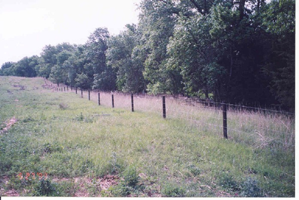

Fencing Riparian Areas and Livestock Exclusion
What is it?
Fencing is an effective BMP to protect riparian and stream habitats. Depending on the objective, fencing can be permanent or temporary. Fencing is commonly used to direct human or livestock traffic away from specific areas of the riparian zone or for complete exclusion. Complete exclusion may be necessary for severely impacted sites with erosion, water quality, and vegetation problems. Fencing will allow time for the riparian area to revegetate and heal in conjunction with appropriate restoration BMPs.
Riparian fence (photo from Kansas State Conservation Commission)
Conservation Benefits
- Increased efficiency to filter pollutants from stormwater runoff
- Improve water quality
- Improve recreational and tourism activities (like improved hiking and birding)
- Reduce sedimentation
- Promote bank stablization
- Protect and restore vegetation and stream banks
What does it include?
Fencing can be constructed from a variety of materials like wood, metal, plastic, or rope. A technical expert should be consulted to determine appropriate materials for the site and objectives. Fencing designed to direct human traffic should be accompanied by signs explaining the fencing and conservation benefits. Landowners implementing fencing to manage livestock access should consider other BMPs like grazing duration control, alternative water sources, and alternative shade sources. All fences should consider wildlife and their need to access the riparian area for forage and nesting habitats.
Fencing Riparian Areas Links
- Fencing (pp.77; Alaska Dept. Fish and Game)
- Fencing (Kansas Forest Service)
- Fencing riparian zones (New South Wales Government)
- Livestock exclusion (pp.18-19; TCEQ)
- Livestock exclusion with riparian buffers for TMDL implementation (Virginia)
- Managing stock access to streams: fencing the riparian corridor (p. 360; Cooperative Research Centre for Catchment Hydology)
- Riparian Area Management Techniques (The Kerr Center for Sustainable Agriculture)
- Streamside livestock exclusion: a tool for increasing farm income and improving water quality
- Wildlife-friendly fences: tools for healthy riparian areas (Big Hole River Foundation)
Fencing Riparian Areas Bibliography
- Armour et al. 1994. The effects of livestock grazing on Western riparian and stream ecosystems. Fisheries 19: 9-12.
- Belsky et al. 1999. Survey of livestock influences on stream and riparian ecosystems in the western United States. Journal of Soil and Water Conservation 54: 419-431.
- Platts and Wagstaff. 1984. Fencing to control livestock grazing on riparian habitats along streams: is it a viable alternative? North American Journal of Fisheries Management 4: 266-272.